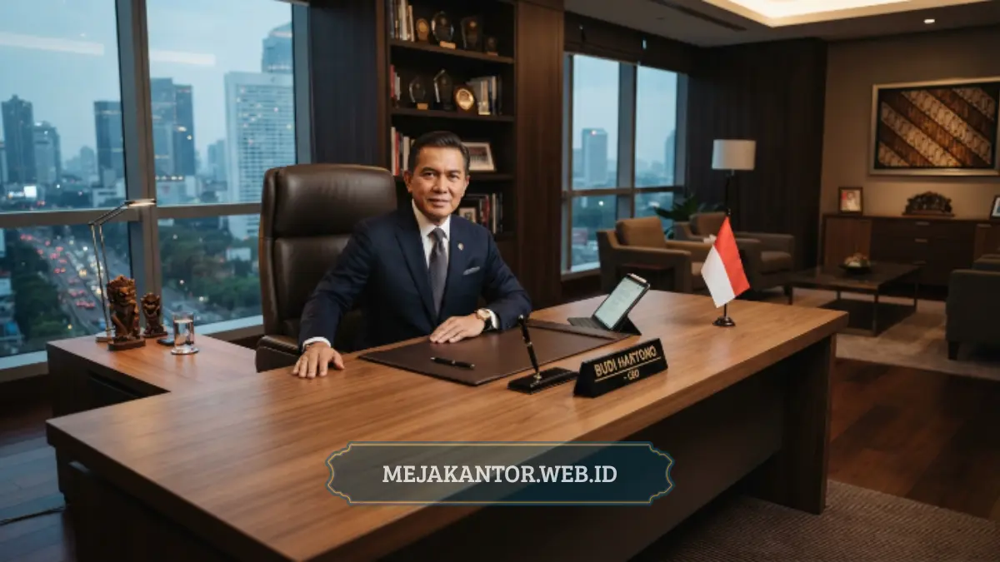

Perbedaan utama meja kantor minimalis dan meja kantor eksekutif terletak pada dimensi ukuran, material, tingkat kerumitan desain, dan fungsi representasi di lingkungan kerja. Meja minimalis mengutamakan efisiensi ruang dan fungsi praktis harian.
Sementara itu, meja eksekutif menonjolkan kewibawaan serta fungsi koordinasi strategis bagi jajaran pimpinan institusi. Memahami perbedaan ini krusial agar pengadaan furnitur selaras dengan kebutuhan masing-masing divisi.
- Meja minimalis berukuran lebih ringkas dan cocok untuk ruang kerja staf atau open space.
- Meja eksekutif berukuran lebih besar dengan material premium untuk ruang kerja pimpinan.
- Harga meja eksekutif umumnya lebih tinggi karena material dan fitur tambahan yang lebih kompleks.
- Fungsi meja minimalis lebih menekankan efisiensi, sedangkan meja eksekutif menekankan representasi status.
- Kedua jenis meja dapat dikombinasikan dalam satu kantor sesuai kebutuhan masing-masing ruangan.
Menata tata letak interior perusahaan sering kali melibatkan keputusan penting mengenai jenis meja yang ditempatkan pada setiap zona kerja. Perbedaan karakter kedua model meja ini menentukan efektivitas ruang secara menyeluruh.
Setiap pilihan furnitur membawa dampak tersendiri terhadap produktivitas dan impresi tamu bisnis. Artikel ini mengulas perbandingan komprehensif agar Anda dapat menentukan opsi paling ideal bagi kantor Anda.
Daftar Isi Artikel
- Apa Perbedaan Ukuran dan Desain Meja Minimalis dengan Meja Eksekutif?
- Bagaimana Perbedaan Material yang Digunakan pada Kedua Jenis Meja?
- Ruangan Seperti Apa yang Cocok untuk Meja Minimalis dan Meja Eksekutif?
- Bagaimana Fungsi dan Nilai Representasi Kedua Jenis Meja Berbeda?
- Bagaimana Menentukan Kombinasi Meja yang Tepat untuk Kantor Anda?
- Kesimpulan dan Panduan Konsultasi Furnitur Kantor
Apa Perbedaan Ukuran dan Desain Meja Minimalis dengan Meja Eksekutif?
Meja kantor minimalis memiliki ukuran yang lebih ringkas dengan aksen garis lurus sederhana tanpa ornamen yang mencolok. Karakter fisik ini memberikan fleksibilitas tinggi saat dipasang pada ruangan dengan batas luasan terbatas.
Sebaliknya, meja eksekutif dirancang dengan skala proporsi lebih besar dan lekukan desain yang lebih megah dan berbobot. Meja ini sering dilengkapi panel depan bertekstur, sudut membulat, dan aksen garis elegan yang menawan.
Kesederhanaan bentuk meja minimalis menjadikannya luwes dipadukan dengan gaya interior industrial maupun modern kontemporer. Sedangkan meja eksekutif menjadi titik vokal utama yang langsung mencuri perhatian di ruang manajerial.

Bagaimana Perbedaan Material yang Digunakan pada Kedua Jenis Meja?
Meja eksekutif umumnya dibuat dari kayu solid pilihan seperti jati atau mahoni, serta panel berlapisan veneer kayu alami berkualitas ekspor. Pemilihan bahan bermutu tinggi bertujuan menghadirkan serat kayu mewah dan bobot struktur yang mantap.
Sementara itu, meja kantor minimalis lebih mengedepankan efisiensi biaya lewat pemanfaatan particle board atau MDF berfinishing lapisan HPL. Lapisan laminasi ini menawarkan ketahanan prima terhadap goresan dan cairan pembersih harian.
Material kayu solid pada meja eksekutif membutuhkan perawatan berkala agar kilau alaminya tidak memudar termakan waktu. Adapun meja minimalis berlapis HPL sangat praktis dirawat oleh tim kebersihan kantor tanpa perlakuan rumit.
Ruangan Seperti Apa yang Cocok untuk Meja Minimalis dan Meja Eksekutif?
Meja minimalis paling cocok dialokasikan untuk area kerja terbuka karyawan, divisi operasional bersama, atau kantor startup yang dinamis. Desainnya yang ramping memudahkan penataan modul kerja tim yang fleksibel dan hemat tempat.
Sebaliknya, meja eksekutif wajib ditempatkan pada ruangan privat yang luas seperti ruang direksi, manajer senior, atau ruang rapat dewan komisaris. Ruangan berukuran lega memastikan proporsi visual meja megah tetap seimbang dan lapang.
Menempatkan meja eksekutif di area sempit justru akan mempersempit ruang gerak dan menimbulkan kesan sesak. Oleh karenanya, pengukuran denah ruangan menjadi syarat mutlak sebelum menentukan tipe furnitur yang dibeli.
Bagaimana Fungsi dan Nilai Representasi Kedua Jenis Meja Berbeda?
Fungsi utama meja minimalis adalah mengoptimalkan kecepatan tugas staf dengan sarana kerja yang praktis, rapi, dan mudah diakses. Aspek fungsionalitas dan ergonomi menjadi titik berat utama pada tipe meja staf ini.
Di sisi lain, meja eksekutif mengemban peran ganda sebagai meja kerja sekaligus simbol otoritas dan martabat kepemimpinan organisasi. Meja ini sering dimanfaatkan untuk menyambut tamu VIP dan menegosiasikan kesepakatan bisnis penting.
Perbedaan peran tersebut membuktikan bahwa kedua jenis meja saling mengisi dalam ekosistem kantor modern, bukan saling bersaing. Keduanya memiliki fungsi yang sama pentingnya dalam kelancaran operasional korporasi.
Bagaimana Menentukan Kombinasi Meja yang Tepat untuk Kantor Anda?
Sebagian besar korporasi modern menerapkan strategi penggabungan kedua jenis meja secara proporsional dalam gedung kantor mereka. Area kerja staf diisi deretan meja minimalis modular untuk memaksimalkan kapasitas tempat duduk karyawan.
Sementara itu, ruangan pimpinan dilengkapi meja eksekutif premium yang merepresentasikan kredibilitas instansi. Strategi ini sangat efektif dalam mengendalikan total biaya pengadaan furnitur tanpa mengorbankan prestise perusahaan.
Perencanaan layout yang matang akan menjamin keselarasan tema interior antara zona staf dan zona manajerial. Harmonisasi warna dan finishing material menjadi kunci terciptanya kantor yang profesional dan estetik.
Kesimpulan dan Panduan Konsultasi Furnitur Kantor
Meja kantor minimalis dan meja eksekutif memiliki perbedaan mencolok dari dimensi ukuran, material, fungsi harian, serta representasi status. Meja minimalis unggul dalam efisiensi ruang dan anggaran, sementara meja eksekutif unggul dalam kewibawaan.
Menentukan perpaduan furnitur yang pas akan meningkatkan kenyamanan staf sekaligus memperkuat citra profesional institusi Anda. Pastikan setiap sudut ruang kerja ditata dengan furnitur yang tepat guna dan tahan lama.
Masih bimbang menentukan jenis dan formasi meja kantor terbaik untuk perusahaan Anda? Tim konsultan Mejakantor.web.id siap membantu menghadirkan rekomendasi desain dan penawaran paket pengadaan terbaik untuk kantor Anda.

Mega Anggun
Penulis Konten & Spesialis Penataan Interior Kantor. Berpengalaman dalam memberikan tips ergonomi, penataan ruang kerja pimpinan, dan memilih furnitur terbaik untuk menunjang produktivitas kerja.